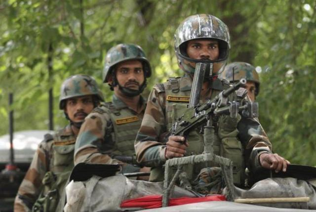
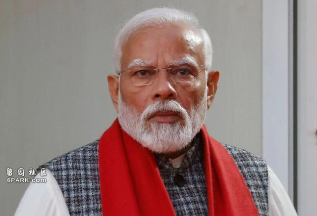
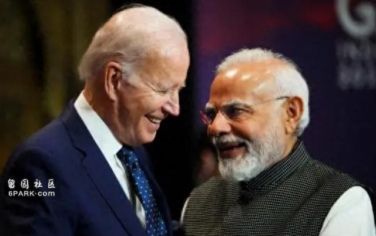
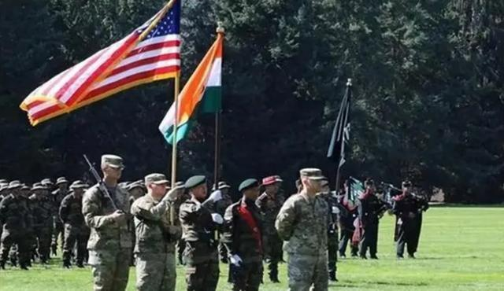

近些年来，美国与印度走得很近，两国在众多领域都有很多合作，让人对两国的实力不容忽视。
而在最近，在美国拥有“中国知乎”之称的问答网站上，有一个引发激烈讨论的问题：“如果印度和美国开战，印度能打败美国吗？”
对此，印度网友们信心满满，认为印度军队可以在战场上与美军一较高下，甚至还觉得印度可以给予美军沉重打击。
那么，事实真如印度网友所说的那么简单吗？如果美国和印度真的开战，印度是否能够战胜美国？
不受控制的印度
印度是一个新兴的大国，它正在全球事务中发挥越来越重要的作用，印度的实力不容小觑，而且近年来，印度与美国的关系走的还挺近的。
2016年，美国将印度列为“主要防务伙伴”，允许其购买先进的军事技术和设备，这一举措大大增强了两国的军事合作。
美印两国每年都会举行联合军事演习，如“马拉巴尔”演习，以提高两国海军的协同作战能力。
美印两国在经贸领域的合作同样取得了显著进展，美国是印度的重要贸易伙伴，两国之间的贸易额不断增长，科技和创新领域的合作也不断加强。
例如，美国的科技巨头谷歌和亚马逊在印度投资建立了多个研发中心，推动了印度的科技创新和经济发展。
这种经贸关系的深化，为两国的战略合作奠定了坚实基础。

还有，近期召开的北约峰会，美西方国家也对印度发出了邀请，美日澳印四国还在一起开会。
由此可见印度与美国之间的合作颇深，不过，对于美国来说，美国可并不是这样想的，他们却觉得印度并不受控制。
因为美国很多官员认为，印度不会成为美国的正式盟友，主要原因在于印度的战略自主性。
印度一直坚持独立自主的外交政策，不愿意完全依赖任何一个大国。
7月31日，美国副国务卿库尔特·坎贝尔曾表示，尽管美印关系密切，但印度有着自己的国家利益和战略目标，不会轻易受到美国的控制，因此两国永远不会成为盟友。
而且，印度在全球事务中寻求平衡，既与美国合作，又与俄罗斯等国保持良好关系。
例如，俄乌战争，印度不听从美西方国家提出的远离俄罗的警告，反而不断购买俄罗斯的军事武器S400系统，或者是出口武器给俄罗斯，每天进口俄罗斯36万桶石油。
在今年被北约峰会期间，面对美西方的邀请，印度却和普京进行会面，并且还在媒体上大肆报道，印度的这些举动对于美国来说无疑是打脸行为。
7月29日，印度外长苏杰生在与美国、日本、澳大利亚开会时表示，中国与印度之间近些年来关于西藏的问题是两国自己的事情，不需要第三个国家干涉。
他说的这句话言外之意就是，印度与中国的边境问题，美西方国家最好别插手。
印度对外表现出的这种比较自主独立的外交关系，对于美国来说却会死并不是一件好事。

正如美国所说，两国可以保持紧密合作，但是永远不会成为盟友，因为这种不对美国言听计从的情况自然是美国不想看到的。
而在近期，有美国网友针对美印之间微妙的关系提出了疑问，如果美印发动战争，印度能打败美国吗？
印度能打赢美国吗？
针对美国网友提出的问题，我们可以进行一下对比分析，得出结论：
其一，军事方面对比。
美军拥有世界上最强大的武装力量，拥有先进的技术装备、完善的后勤保障系统以及丰富的实战经验。
美军的空军和海军尤其强大，能够在全球范围内快速部署和作战。
例如，美国拥有11艘航空母舰，而印度只有一艘，这种差距意味着美国可以同时在多个战区展开行动，而印度的海上力量则相对有限。
印度的军事力量在南亚地区确实有优势，印度军队在历史上曾多次与邻国巴基斯坦交战，并取得了一定的胜利。
然而，这些经验和装备与美军相比仍有差距，印度军队的装备较为老旧，后勤保障系统也不如美军完善。
例如，印度的坦克和战机大多是从俄罗斯购买的旧型号，而美军则装备了最新的隐形战机和高科技武器。
其二，经济实力对比。
战争不仅仅是军事对抗，经济实力也是关键因素。
美国是全球最大的经济体，GDP超过21万亿美元，拥有强大的工业基础和科技创新能力。战争期间，美国可以动员巨大的经济资源支持军事行动。
相较之下，印度虽然是全球增长最快的经济体之一，但其经济总量和结构尚无法与美国相提并论，战争对印度经济的压力会比美国大得多。
其三，政治与国际盟友。
在政治和国际关系方面，美国拥有广泛的国际盟友。
北约成员国大多会支持美国的军事行动，此外，美国在亚洲也有日本、韩国、澳大利亚等强大的盟友，这些国家在印太地区与美国密切合作。

如果发生战争，美国能够得到这些盟友的支持，形成强大的国际联盟。
印度的国际盟友相对较少，尽管印度与俄罗斯有长期的军事合作关系，但在全球冲突中，俄罗斯是否会全力支持印度尚不确定。
印度在国际事务中更倾向于独立自主的外交政策，缺乏像北约这样的强大联盟支持。
其四，战略位置与后勤保障。
美国在全球范围内拥有大量军事基地和强大的后勤保障能力，使其能够迅速部署军队并维持长期作战。
例如，美国在中东、欧洲和亚太地区都有重要的军事基地，为其全球军事行动提供支持。
印度的军事基地主要集中在南亚地区，缺乏全球范围的后勤保障体系，在全球范围的战争中，印度在战略位置和后勤保障方面将面临巨大挑战。
其五，核威慑力对比。
美国和印度都是拥有核武器的国家，但在核威慑力方面，美国具有明显优势。
美国拥有庞大的核武库和先进的三位一体核打击能力，能够通过陆基、海基和空基平台进行核打击。
印度的核武库规模较小，核打击能力也相对有限，在核威慑方面，美国对印度具有压倒性优势。
所以，综合来看，尽管印度在南亚地区具有一定的军事和政治影响力，但如果在与美国的全面战争中，印度恐怕难以取得胜利。
美国在军事、经济、政治和国际盟友方面均具有显著优势，能够在全球范围内迅速部署和作战。
印度的自信来源于其在地区事务中的优势和政府的长期宣传，但在全球范围的战争中，现实与理想之间的差距将显现。

未来，美印关系的发展、印度在国际事务中的角色及其独立外交政策，将继续对全球格局产生重要影响。
印度与美国之间的关系虽然复杂，但两国在防务、经济和科技等多个领域的合作有助于缓解潜在的冲突，总的来说，维持和平与合作是全球利益的最佳选择。